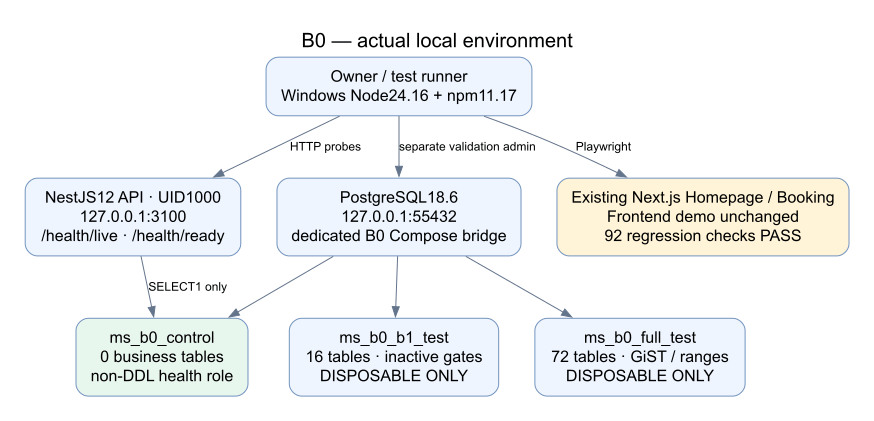
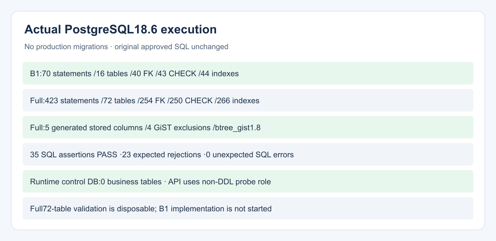
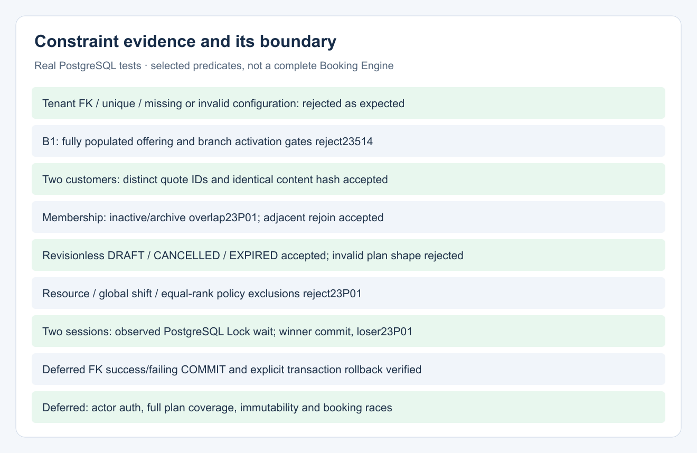
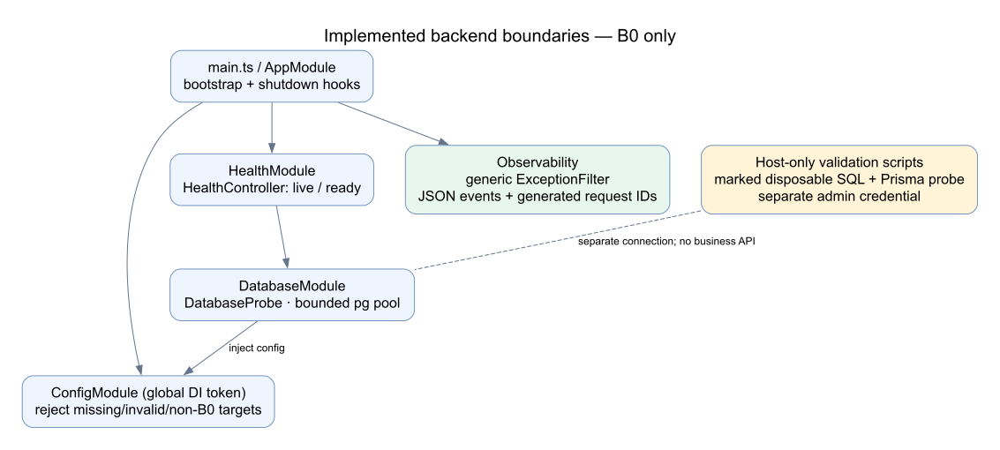
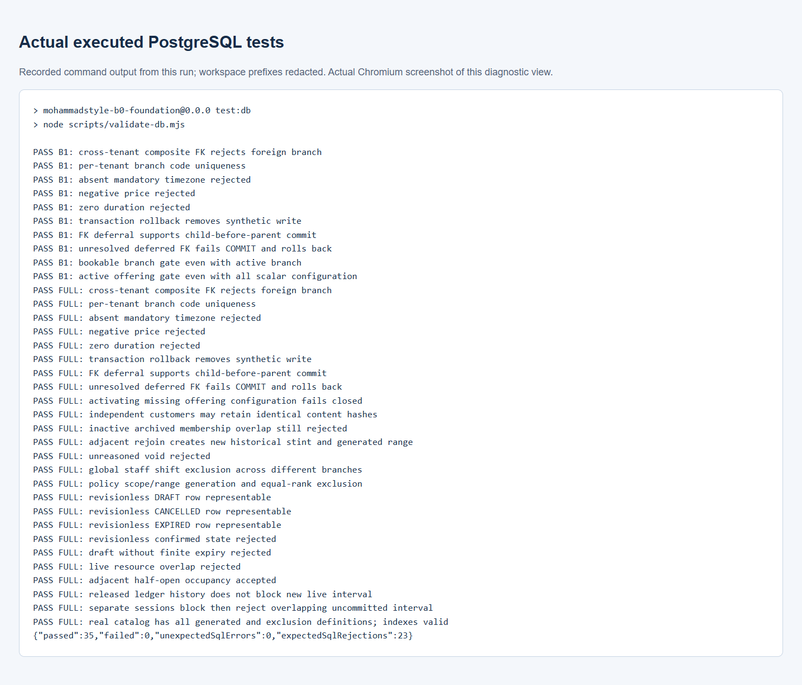
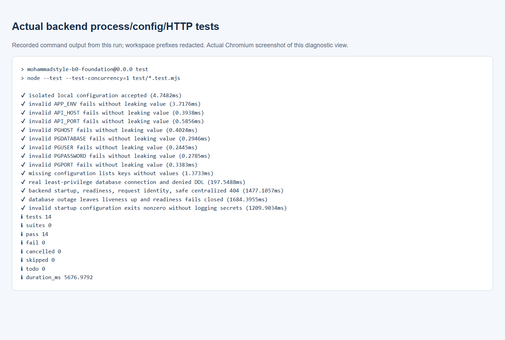
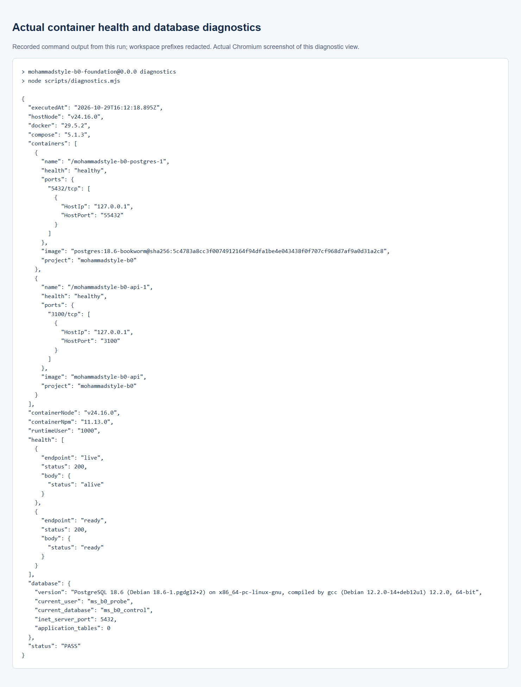
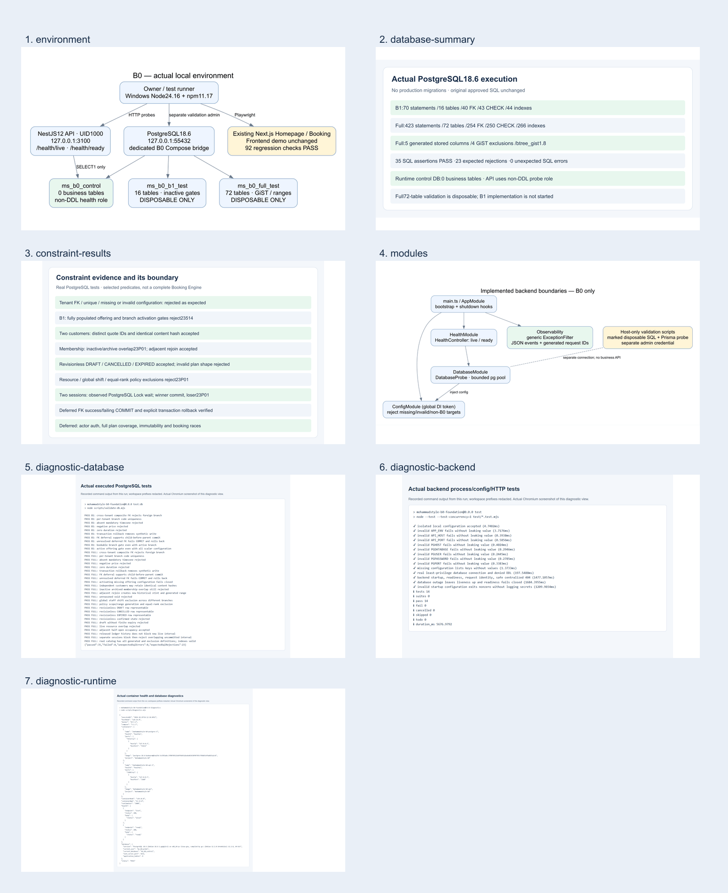

environment
Individual PNG · Zoomable SVG

database-summary
Individual PNG · Zoomable SVG

constraint-results
Individual PNG · Zoomable SVG

modules
Individual PNG · Zoomable SVG

diagnostic-database
Individual PNG · Recorded output view

diagnostic-backend
Individual PNG · Recorded output view

diagnostic-runtime
Individual PNG · Recorded output view

Contact sheet

STOP for B0 approval. No B1/production migration or real business integration.